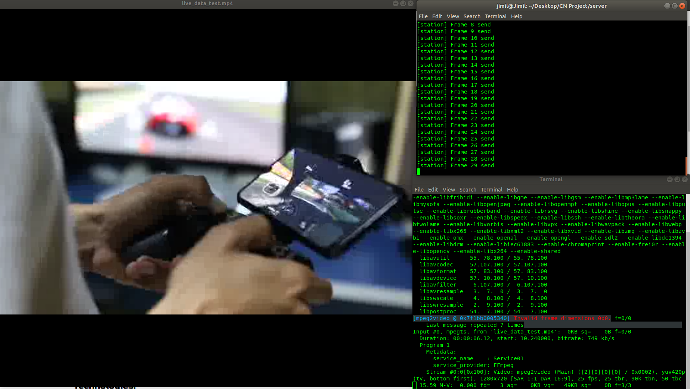

IP Multicast Internet TV
This was my final term Computer Network project. The project was meant to mimic Internet TV/Radio and
was accomplished with IP Multicast.
Video Streaming application that allows users to connect to station and stream videos
at their end. Videos are converted to streamable format with the aid of ffmpeg.
Interactive client interface, which allows users to seamlessly pause, resume, connect to a station as per
their choice.
Server runs concurrently and is designed to serve multiple clients simultaneously.
Technologies:
- - C Socket API
- - FFMPEG and FFPLAY
- - GTK-3.0
Live Video Streaming
